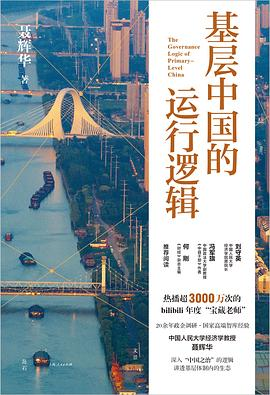

《基层中国的运行逻辑》

总体观点
基层治理中存在的许多看似荒谬的‘形式主义’与‘折腾’，并非基层干部的个人素质问题，而是在特定自上而下科层制考核与激励约束结构下的理性适应行为。
当上级部门将多目标考核推向极致，且各部门均拥有‘一票否决’权力时，基层面对资源匮乏与权责不对等的困境，必然走向‘痕迹管理’、‘留痕自保’与选择性应付。
要真正破解基层内卷与形式主义，必须从制度经济学根源着手：理清权责边界、减少多头考核、赋予基层自主裁量权，并重塑正向激励与容错机制。
核心观点 共 6 条
-
1. ‘权小责大、多头指挥’是基层干部疲于奔命的体制性根源
上面千条线、下面一根针，数十个上级职能部门都可以向下派任务发文件，而基层乡镇街道既无足够财权也无人事编制。
例 ·一个乡镇综治办干部手机里装了三十多个政务APP，每天为了完成各部门的‘打卡拍照积分’就要耗费大半天精力。 -
2. ‘一票否决’机制将风险规避推向极顶，导致干事不如不出事
安全生产、环保、信访等领域的‘一票否决’将干部的注意力彻底锁定在防范极端负面事件上，导致创新激励严重不足。
例 ·基层干部在汛期全员24小时睡在堤坝上不敢合眼，哪怕晴空万里也要层层拍照报送，因为一旦出现意外哪怕立过再大功劳也瞬间清零。 -
3. ‘痕迹主义’本质上是弱势基层在信息不对称下的自保盾牌
上级督查组只能通过看台账、看会议记录、看活动照片来核验工作，逼得基层把九成精力花在‘把文件做漂亮’上以防被问责。
例 ·某村委会为了迎接上级人居环境检查，连夜组织人员刷油漆造册贴标签，实际村民污水横流的地下排污管网却无人问津。 -
4. 地方招商引资与政商博弈：从‘锦标赛竞争’到风险共担
地方官员为了完成GDP与税收硬指标，通过土地优惠与税收返还展开激烈招商竞赛，但也极易引发‘新官不理旧账’信用危机。
例 ·前任县长承诺的税收三免两减半政策在换届后被新班子以‘合规审查’为由暂扣，导致投资企业陷入进退维谷的政策风险。 -
5. 数字化转型在基层往往意外沦为‘数字形式主义’的新枷锁
本意是赋能减负的各类政务大数据系统，因为数据孤岛与重复录入，反而成了基层人员不断重复填报电子表格的无底洞。
例 ·网格员走访一户低保老人，需要在民政、残联、乡村振兴三个互不相通的系统里分别录入完全相同的家庭信息与拍照定位。 -
6. 破解基层内卷之道：下放实权、合并督查与建立法治化容错红线
必须以制度契约明确基层权力清单，大幅削减形式化台账督查，让基层干部从填表应付真正回归走村入户服务群众本职。
例 ·浙江某地推行‘督查检查考核年度准入制’，非经县委统一报备的督查一律不得进村，直接使基层报表数量削减了百分之七十。
全书结构 6 部分
-
第一章 基层治理的困境：从权责失衡到运转内卷
用制度经济学契约理论切入，解剖‘上面千条线、下面一根针’的科层结构，揭示基层乡镇街道权责不对等的制度基因。
例 ·详尽拆解一个典型中西部县城乡镇干部的日常日程表：80%时间用于应对上级各局委办的会议、填表与迎检。 -
第二章 考核的锦标赛：多重任务与一票否决的扭曲效应
剖析地方官员晋升激励与指标考核，探讨当经济增长、环保督察、安全稳定等多目标冲突时，基层干部的行为选择机制。
例 ·对比环保督察期间地方对高污染但高纳税企业的两难处置，展现基层在完成刚性环保指标与保地方财政之间的惊险平衡。 -
第三章 痕迹管理之谜：形式主义背后的理性自保逻辑
深入剖析‘迎检文化’、‘台账战争’与‘拍照留痕’，论证形式主义并非干部懒政，而是面对免责追责考核时的理性避险反应。
例 ·通过一项对村干部的深度访谈，揭示同一场森林防火巡山工作，为何必须拍六张不同角度带GPS水印的照片才算‘履职到位’。 -
第四章 基层政企博弈：招商引资的契约陷阱与政商生态
全景考察地方招商引资的‘拼土地、拼补贴’恶性竞争，分析换届周期对企业营商环境的冲击，探讨政商关系的制度化重塑。
例 ·追踪一个高新技术产业园项目的招引历程：从地方官员的热情承诺到项目落地后的环评卡壳，展现政企信息不对称博弈。 -
第五章 数字基层：科技赋能抑或新的数字镣铐？
评估智慧政务、网格化管理与大数据监管在基层的实际效能，警示‘手机里的形式主义’给基层人员带来的隐性工作负荷。
例 ·调查基层干部手机中泛滥的政务微信群与考核APP，揭露‘全员转发点赞阅读量排名’对真实基层治理精力的严重侵蚀。 -
第六章 走向善治：重塑激励机制与基层治理现代化
系统提出基层减负五大政策工具箱：明确清单权责、整合合并督查、规范一票否决、建立清晰容错纠错边界与扩大群众评价权重。
例 ·总结部分改革试点地区的成功经验：通过‘一网统管’数据共享真正打通部门壁垒，把村干部从办公电脑前彻底解放回田间地头。